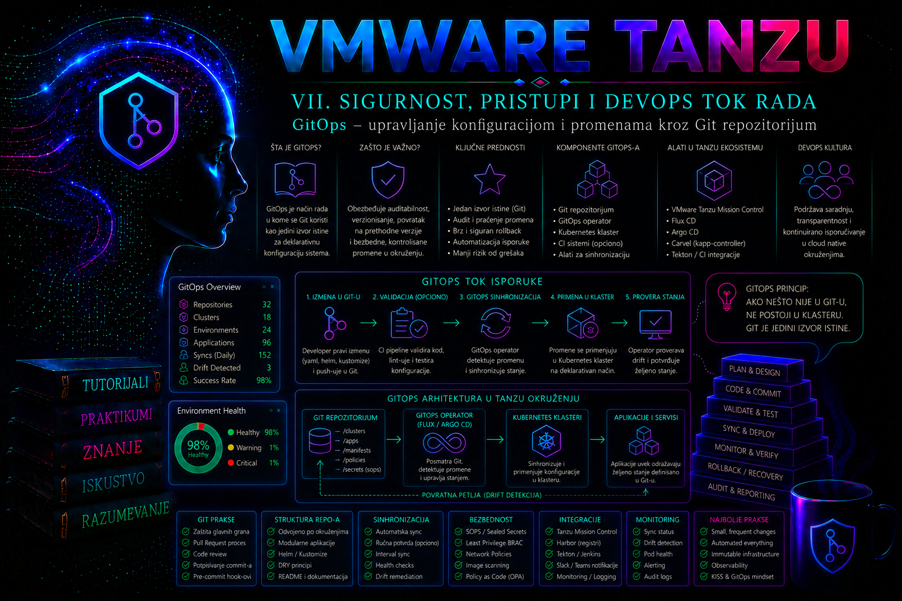

VMware & Tanzu

Od ručne operacije do kontrolisanog sistema automatizacije
Prethodna lekcija uspostavila je redosled i kontrolne tačke životnog ciklusa cele platforme. Ova lekcija taj operativni plan pretvara u ponovljiv izvršni tok. Cilj nije da se svaka radnja po svaku cenu automatizuje, već da se operacije koje se često ponavljaju ili nose veliki rizik izvode na isti način, sa jasno određenim ulazima, ovlašćenjima, preduslovima, proverama, dokazima i putem povratka.
U vSphere Supervisor i VKS okruženju automatizacija prelazi više upravljačkih ravni. vCenter i drugi VCF servisi izlažu svoje API-je; PowerCLI i drugi CLI alati te API-je predstavljaju kao administratorske komande; Kubernetes i Tanzu resursi koriste deklarativni API; GitOps kontroler kontinuirano usklađuje resurse čiji je autoritativni izvor Git. Nijedan alat sam po sebi ne obezbeđuje idempotenciju, bezbednost ili dokazivost. Te osobine nastaju tek kada su način promene, vlasništvo nad stanjem i kriterijumi prihvatanja pravilno projektovani.
| Sloj | Najpogodnija upotreba | Glavni rizik | Obavezni dokaz |
|---|---|---|---|
| GUI | Istraživanje, jednokratna odobrena intervencija i vizuelna korelacija | Teško ponavljanje i nepotpun audit postupka | Task/Event zapis, snimljeni ulazi i post-check |
| CLI ili PowerCLI | Interaktivna dijagnostika, inventar i kontrolisani runbook | Pogrešan kontekst, parcijalno izvršenje ili oslanjanje na format izlaza | Verzija alata, kontekst, transcript, izlazni kod i stanje posle operacije |
| REST/API ili SDK | Integracija sistema, velike serije i asinhroni poslovi | Pogrešna verzija ugovora, retry bez zaštite i curenje tokena | Request ID, HTTP status, task ID, sanitizovan odgovor i konačno stanje |
| Deklarativni manifest | Željeno stanje Kubernetes resursa i politika | Konflikt vlasništva nad poljima ili destruktivni prune | Render, schema/admission provera, diff, managed fields i health status |
| GitOps | Kontinuirano usklađivanje i promocija između okruženja | Kompromitovan izvor istine ili preširoka prava kontrolera | Odobren commit, primenjena revizija, condition, audit i funkcionalni test |
Ponovljivost, idempotencija i proverljivost
Ponovljiva operacija sa istim kontrolisanim ulazima daje predvidiv rezultat. Idempotentna operacija može se ponovo izvršiti bez neželjenog umnožavanja ili nove promene kada je cilj već ostvaren. Proverljiva operacija ostavlja dovoljno dokaza da nezavisna osoba može utvrditi ko je odobrio promenu, koja verzija koda i koji parametri su korišćeni, šta je sistem prihvatio i da li je poslovna funkcija ostala zdrava.
Idempotencija nije isto što i „skripta se može pokrenuti dva puta”. Komanda za kreiranje često drugi put vraća grešku; skripta koja tu grešku bezuslovno ignoriše može sakriti pogrešno postojeće stanje. Ispravan obrazac je observe–compare–act–verify: pročitaj stanje, normalizuj ga, uporedi sa namerom, promeni samo razliku i ponovo pročitaj autoritativni sistem. Kod asinhronih API operacija mora se sačekati završetak task-a, jer prihvaćen zahtev nije dokaz uspešno završene promene.
- Precondition: verzija platforme, identitet cilja, slobodan kapacitet, zavisnosti i prava odgovaraju planu.
- Plan ili diff: pre state-changing poziva postoji pregled očekivane razlike i zone posledica.
- Jedan vlasnik polja: unapred je određeno da li poljem upravlja GitOps, operator, autoscaler, PowerCLI skripta ili čovek.
- Ograničena promena: batch ima kontrolisanu veličinu, timeout, retry politiku i mogućnost zaustavljanja.
- Postcondition: stanje se čita iz sistema, a ne zaključuje iz činjenice da komanda nije prijavila grešku.
- Dokaz: beleže se korelacioni ID, task, Git SHA, verzija image-a ili modula, vreme, rezultat i odobrenje, ali ne i tajne.
API ugovor, verzije i asinhroni poslovi
vSphere Automation API, vSphere Web Services API, Kubernetes API i API-ji dodatnih VCF/Tanzu komponenti nisu jedan zajednički interfejs. Pokrivenost funkcija, autentikacija, putanje, oblik greške i model zadatka razlikuju se po proizvodu i izdanju. Pre razvoja automatizacije treba otvoriti referencu koja odgovara stvarnoj ciljnoj verziji, proveriti dostupnost endpoint-a i privilegije, a zatim zabeležiti minimalnu i maksimalnu testiranu verziju. Poziv koji postoji u vSphere 9.x ne sme se pretpostaviti za vSphere 8.x.
Aktuelni Broadcom portal i dalje objavljuje vSphere Automation API i Web Services API reference. Raniji zaseban vSphere Automation SDK for REST označen je kao obustavljen od vSphere 7.0; to ne znači da je REST API ukinut. REST se poziva standardnim HTTP klijentom ili podržanim jezičkim SDK-om. VMware PowerCLI je u novijoj dokumentaciji preimenovan i distribuira se kao VMware Cloud Foundation PowerCLI; naziv konkretnih modula i cmdlet-a ipak mora biti proveravan prema instaliranoj verziji i matrici kompatibilnosti.
HTTP status 200 ili 201 obično označava neposredan rezultat, 202 Accepted prihvatanje asinhronog rada, 401 neuspelu autentikaciju, 403 nedovoljnu autorizaciju, 404 pogrešan ili nedostupan resurs, 409 konflikt stanja, a 429 ograničenje učestalosti. Automatizacija mora obraditi dokumentovani model konkretnog endpoint-a; generičko pravilo ne sme zameniti njegovu API referencu.
Retry je bezbedan samo kada je operacija idempotentna ili zaštićena idempotency ključem koji taj API zaista podržava. Mrežni timeout nakon slanja POST zahteva ostavlja neizvesnost: server je možda kreirao objekat iako klijent nije primio odgovor. Pre ponavljanja najpre se traži objekat po stabilnom poslovnom ključu ili se proverava vraćeni task/correlation ID. Exponential backoff sa jitter-om koristi se za dokumentovane prolazne greške, dok se 400, 401 i većina 403 odgovora ne „leče” beskonačnim retry-jem.
CLI i PowerCLI kao bezbedan izvršni sloj
CLI komanda je samo klijent API-ja. Njena prednost je brzina, shell kompozicija i čitljiv runbook; slabost je što se format teksta, podrazumevani kontekst i interaktivno ponašanje mogu menjati. Automatizacija treba da koristi strukturisani JSON/YAML izlaz kada postoji, eksplicitne identifikatore i parametre, proveru izlaznog koda i zaključane verzije alata. Parsiranje kolona namenjenih čoveku pomoću grep ili awk nije stabilan ugovor.
PowerCLI tok treba da uspostavi eksplicitnu sesiju, proveri identitet servera i sertifikat, koristi -WhatIf kada ga cmdlet podržava i zaustavi se na grešci. Globalno isključivanje provere sertifikata nije prihvatljiva produkciona praksa; interni CA lanac treba uvesti u trust store. Lozinka se ne upisuje u skriptu, command history ili transcript.
$ErrorActionPreference = 'Stop'
$server = 'vcsa01.example.internal'
$credential = Get-Credential -Message "vCenter nalog sa najmanjim potrebnim pravima"
$session = Connect-VIServer -Server $server -Credential $credential
try {
$cluster = Get-Cluster -Name 'compute-prod-01' -Server $session
if ($null -eq $cluster) {
throw 'Ciljni klaster nije pronađen.'
}
Get-VM -Location $cluster |
Select-Object Name, PowerState, NumCpu, MemoryGB |
Sort-Object Name
}
finally {
Disconnect-VIServer -Server $session -Confirm:$false
}Primer je read-only: pravi inventar VM-ova i demonstrira eksplicitno povezivanje i sigurno zatvaranje sesije. Za state-changing cmdlet pre izvršenja se proveravaju Get-Help CMDLET -Full, podrška za -WhatIf, scope objekta i rollback. Uspeh se potvrđuje novim Get-* pozivom i odgovarajućim vCenter Task/Event zapisom, a ne samo odsustvom PowerShell exception-a.
Kubernetes API: dry-run, diff, apply i vlasništvo nad poljima
kubectl komunicira sa Kubernetes API serverom. --dry-run=client proverava i renderuje zahtev lokalno, ali ne prolazi serversko defaultovanje, aktuelnu OpenAPI šemu ni admission lance. --dry-run=server šalje neperzistentan zahtev API serveru i zato daje relevantniju proveru. kubectl diff koristi server-side dry-run i zahteva prava potrebna za simuliranu create/update/patch operaciju; nije samo read-only get.
kubectl --context=tkg-prod-01-admin@tkg-prod-01 \
apply --server-side --dry-run=server \
--field-manager=tashizza-platform \
-f rendered.yaml
kubectl --context=tkg-prod-01-admin@tkg-prod-01 \
diff --server-side \
--field-manager=tashizza-platform \
-f rendered.yamlPrva komanda ne perzistira promenu; druga prikazuje očekivanu razliku i uobičajeno koristi izlazni kod 0 kada razlike nema, 1 kada razlika postoji i vrednost veću od 1 za grešku. CI zato ne sme svaki nenulti kod automatski označiti kao kvar. Server-Side Apply upisuje vlasništvo u metadata.managedFields i prijavljuje konflikt kada drugi field manager upravlja istim poljem. Opcija --force-conflicts preuzima vlasništvo i nije rutinska popravka; koristi se samo kada je promena vlasnika polja namerna, pregledana i dokumentovana.
Deklarativno ne znači automatski bezopasno. Brisanje resursa iz izvora uz pruning, promena immutable polja, usvajanje postojećeg objekta ili promena selector-a mogu izazvati zamenu ili prekid rada. Pre apply-a se proveravaju renderovani resursi, namespace, CRD zavisnosti, admission rezultat, diff i politika vlasništva; posle apply-a conditions, events, rollout i funkcionalni signal.
Projektovanje automatizovanog toka i njegovih zaštitnih ograda
Pouzdan pipeline ne treba da bude jedna duga skripta sa administratorskim nalogom. Razdvaja se na faze sa različitim pravima: validacija izvornog koda bez pristupa klasteru; render i statičke provere; server-side dry-run sa ograničenim pravom; ručno odobrenje za produkciju; primena preko GitOps kontrolera; zatim health i funkcionalna validacija. Time kompromitovanje build faze ne daje automatski pravo izmene produkcije.
- Identifikuj artefakte: zabeleži Git SHA, digest container image-a, verziju Helm chart-a, verzije modula i alata.
- Validiraj bez promene: lint, schema provera, Kustomize/Helm render, policy test, secret scanning i unit test.
- Simuliraj prema ciljnom API-ju: server-side dry-run i diff u odgovarajućem kontekstu, uz zapis rezultata i admission odluke.
- Odobri granicu: reviewer vidi stvarni renderovani diff, procenu uticaja, maintenance window i rollback uslov.
- Primeni kontrolisano: ograničen identitet, maksimalan broj paralelnih promena, timeout i zaustavljanje na prvom neuspešnom zaštitnom kriterijumu.
- Potvrdi: task/condition, događaji, rollout, SLO signal i smoke test moraju biti povezani sa istom revizijom.
- Zatvori ili vrati: promena se zatvara dokazima; ako kriterijum nije ispunjen, aktivira se unapred odobren rollback ili eskalacija.
Konfiguracija pipeline-a i runbook skripte moraju biti verzionisane i pregledane kao produkcioni kod. Zavisnosti se pin-uju na podržane verzije ili digest-e, a runner image se periodično obnavlja zbog bezbednosnih ispravki. Generisani plan, log i diff mogu sadržati interne nazive, IP adrese ili deo Secret objekta; pre arhiviranja moraju se klasifikovati i sanitizovati. Opcije poput set -x, PowerShell transcript-a i previše detaljnog HTTP debug izlaza ne koriste se oko kredencijala i authorization header-a.
Interoperabilnost i granice automatizacije
Automatizacija vSphere sloja i GitOps automatizacija workload-a ne smeju istovremeno posedovati iste odluke. PowerCLI može pripremiti namespace zavisnosti, storage politiku ili inventarske oznake kada je za to podržan odgovarajući interfejs, dok GitOps zatim upravlja namespaced Kubernetes resursima. Prenos između faza vrši se preko stabilnih identifikatora i eksplicitnog ugovora, ne parsiranjem naziva prikazanog u GUI-ju.
Redosled zavisnosti je deo dizajna: CRD pre custom resource-a, namespace i RBAC pre ograničenog reconciliation-a, registry poverenje pre workload-a, storage klasa pre PVC-a i mrežna politika uz proveru potrebnih tokova. GitOps dependsOn može izraziti deo ovog redosleda unutar kontrolera, ali ne dokazuje spremnost spoljnog DNS-a, load balancer-a, baze ili storage sistema. Za njih se definišu zasebni, vremenski ograničeni pre-check i funkcionalni kriterijumi.
Automatizacija se zaustavlja i eskalira kada je trenutno stanje nepoznato, kada diff prelazi odobrenu zonu promene, kada postoji nedokumentovan vlasnik polja, kada backup ili rollback nisu dokazani, kada se traži zaobilaženje admission politike ili kada API vraća konflikt koji skripta ne ume jednoznačno da razreši. „Force” opcija nije zamena za odluku vlasnika sistema.
GitOps kao operativni model upravljanja
GitOps je operativni model u kome se željeno stanje Kubernetes okruženja opisuje deklarativnim konfiguracionim fajlovima, čuva u kontrolisanom Git repozitorijumu i automatski usklađuje sa stvarnim stanjem klastera. Git nije samo mesto za čuvanje YAML fajlova, već evidencija odobrenih promena, tačka kontrole pristupa, izvor revizijske istorije i osnova za povratak na prethodno poznato ispravno stanje.
U klasičnom postupku administrator ili CI sistem izvršava kubectl apply neposredno prema klasteru. Kod GitOps modela promena se prvo unosi u Git, prolazi proveru i odobravanje, a zatim kontroler unutar klastera preuzima odobrenu reviziju i primenjuje je. Time se razdvaja pravo da se predloži promena od prava da se neposredno menja produkcioni Kubernetes API.
GitOps nije zamena za Git, CI, registry, RBAC, politike prijema objekata, upravljanje tajnama ili monitoring. On ih povezuje u kontrolisan tok. CI i dalje gradi i testira aplikaciju, registry čuva image, sigurnosni sistemi proveravaju artefakte, dok GitOps kontroler obavlja kontinuiranu isporuku deklarisanog stanja u klaster.
U Tanzu okruženju GitOps se može primeniti na workload klastere nezavisno od toga da li se koriste vSphere with Tanzu, VMware Tanzu Kubernetes Grid, VMware Tanzu Platform ili drugo podržano Kubernetes okruženje. Konkretan način instalacije, podržane verzije komponenti i odgovornost za njihov životni ciklus zavise od Tanzu izdanja i ugovorenog modela podrške. Administrator zato pre implementacije mora proveriti matricu kompatibilnosti klastera, Kubernetes verzije i izabranog GitOps kontrolera.
Deklarativno željeno stanje i petlja usklađivanja
Kubernetes je zasnovan na kontrolnim petljama: kontroleri posmatraju trenutno stanje resursa, porede ga sa željenim stanjem i pokušavaju da uklone razliku. GitOps proširuje isti princip izvan pojedinačnog Kubernetes objekta. Git repozitorijum postaje spoljašnji izvor željenog stanja, a GitOps kontroler periodično ili na osnovu događaja proverava novu reviziju, priprema manifestacije, primenjuje ih i evidentira rezultat.
Tipična petlja usklađivanja obuhvata sledeći tok:
- Promena konfiguracije se izrađuje u posebnoj Git grani.
- Automatske provere validiraju sintaksu, strukturu, sigurnosne politike i dozvoljene image reference.
- Ovlašćeni reviewer pregleda razliku i odobrava pull ili merge request.
- Promena se spaja u zaštićenu granu koja predstavlja željeno stanje određenog okruženja.
- GitOps source kontroler preuzima novu Git reviziju i formira artefakt.
- Kontroler za primenu obrađuje Kustomize, Helm ili direktne YAML resurse.
- Kubernetes API validira autentikaciju, RBAC i admission politike, a zatim prihvata ili odbija objekte.
- GitOps kontroler proverava zdravlje resursa i status usklađivanja izlaže kroz Kubernetes conditions, događaje, metrike i logove.
Periodično usklađivanje nije samo mehanizam za deploy. Ono otkriva i ispravlja drift, odnosno ručne promene u klasteru koje nisu zabeležene u Git-u. Ako administrator ručno promeni image ili konfiguraciju objekta kojim upravlja GitOps, kontroler će pri narednom usklađivanju najčešće vratiti vrednost iz Git-a. To je očekivano ponašanje, a ne kvar kontrolera.
GitOps kontroler ne može da zaključi da je svaka tehnički validna konfiguracija poslovno ispravna. Manifest može uspešno proći Kubernetes validaciju, a ipak izazvati pogrešno ponašanje aplikacije. Zato su automatski testovi, pregled promene, zdravstvene provere, observability i jasno definisan rollback i dalje neophodni.
Pull model, bezbednost i granice poverenja
U pull modelu kontroler radi u klasteru i sam preuzima konfiguraciju iz autorizovanog izvora. Spoljni CI sistem ne mora da poseduje produkcioni kubeconfig niti široka prava nad Kubernetes API-jem. Time se smanjuje broj sistema koji mogu neposredno menjati klaster i ograničava posledica kompromitovanja CI okruženja.
Međutim, bezbednost se ne dobija automatski. Kompromitovan Git nalog, pogrešno podešena zaštita grane ili preširoka prava GitOps service account-a mogu napadaču omogućiti da kroz legitimnu petlju usklađivanja primeni štetnu konfiguraciju. Git repozitorijum zato treba tretirati kao administratorski interfejs produkcionog sistema.
Granice poverenja moraju biti jasno određene:
- Git platforma autentikuje korisnike, primenjuje višefaktorsku autentikaciju, štiti grane, zahteva review i čuva audit događaje.
- CI kontrole proveravaju YAML, Kustomize ili Helm izlaz, sigurnosne politike, zabranjene privilegije, dozvoljene registry-je i eventualno potpise.
- GitOps source kontroler ima samo pravo čitanja odgovarajućeg repozitorijuma ili putanje.
- GitOps apply kontroler dobija Kubernetes prava potrebna za resurse kojima zaista upravlja.
- Admission kontrola predstavlja poslednju preventivnu granicu pre upisa objekta u Kubernetes API.
- Monitoring i audit otkrivaju neuspešno usklađivanje, neočekivanu reviziju, promenu privilegija i odstupanje od odobrenog procesa.
Jedna centralna GitOps instalacija sa neograničenim cluster-admin pravom jeste jednostavna za početak, ali stvara veliku zonu posledica. U višekorisničkom enterprise okruženju treba razdvojiti platformsku konfiguraciju od aplikacionih konfiguracija, koristiti zasebne repozitorijume ili strogo kontrolisane putanje i, gde alat podržava takvu izolaciju, usklađivanje izvršavati preko service account-a ograničenog na odgovarajući namespace.
Organizacija repozitorijuma i okruženja
Struktura repozitorijuma mora omogućiti da administrator lako odgovori na pitanja: koja revizija je primenjena, kome pripada resurs, za koje okruženje važi, šta je zajedničko, a šta specifično i kojim redosledom se zavisnosti primenjuju. Ne postoji jedna obavezna struktura, ali ona mora biti dosledna i dovoljno jasna za review i incidentnu analizu.
Uobičajeni pristup je razdvajanje osnovne konfiguracije i overlay-a za pojedinačna okruženja. Osnova sadrži zajedničke resurse, dok overlay menja broj replika, limite, hostove, klase skladišta ili druge vrednosti specifične za razvojno, testno i produkciono okruženje. Kustomize to omogućava bez kopiranja celih manifestacija.
| Model | Prednost | Operativni rizik |
|---|---|---|
| Jedan repozitorijum za više klastera | Jedinstven pregled i lakše deljenje zajedničke osnove | Greška u pravima ili putanji može uticati na više okruženja |
| Repozitorijum po okruženju | Jasna izolacija i jednostavnija kontrola pristupa | Veće dupliranje i složenije usklađivanje zajedničkih promena |
| Repozitorijum po timu ili aplikaciji | Jasno vlasništvo i delegiranje | Veliki broj izvora, kredencijala i kontrolera za praćenje |
| Monorepo sa kontrolisanim putanjama | Centralni review i atomske promene više komponenti | Zahteva stroga CODEOWNERS pravila i pažljivo ograničavanje zone promene |
Produkciona i neprodukcijska okruženja ne treba da prate istu nekontrolisanu granu ako promena treba da prolazi promociju. Pouzdaniji model je da svako okruženje prati eksplicitno kontrolisanu putanju, granu, tag ili commit. Praćenje grane olakšava kontinuirane promene, dok pinovanje na tag ili commit daje strožu reproduktivnost, ali zahteva proces za ažuriranje reference.
GitOps repozitorijum treba da sadrži željeno stanje, a ne generisane kubeconfig fajlove, privatne ključeve, pristupne tokene ili tajne u čitljivom obliku. Kubernetes Secret kodiran Base64 formatom nije šifrovan i ne sme se smatrati bezbednim za javni ili privatni Git. Tajne se rešavaju integracijom sa spoljnim secrets sistemom, šifrovanim GitOps formatom ili kontrolisanim procesom koji tajnu dostavlja izvan repozitorijuma.
Flux arhitektura u Kubernetes i Tanzu okruženju
Flux je CNCF GitOps skup kontrolera koji se često koristi u Kubernetes i Tanzu okruženjima. Flux v2 nije jedan monolitni proces, već skup specijalizovanih kontrolera i prilagođenih Kubernetes resursa. Tačna instalirana kombinacija može da se razlikuje, ali tipično obuhvata source-controller, kustomize-controller, helm-controller i notification-controller. Kontroleri za image refleksiju i automatizaciju su opcioni.
- source-controller pristupa Git, Helm, OCI ili drugim podržanim izvorima, proverava reviziju i proizvodi artefakt koji koriste ostali kontroleri.
- kustomize-controller obrađuje manifestacije, Kustomize konfiguraciju, zavisnosti, pruning i zdravstvene provere.
- helm-controller upravlja deklarativnim životnim ciklusom Helm izdanja.
- notification-controller prima događaje, šalje obaveštenja i može omogućiti webhook podsticaj za brže usklađivanje.
Resurs GitRepository opisuje gde se nalazi izvor, koju granu, tag, commit ili semantičku verziju treba pratiti, koliko često se proverava i koji Secret sadrži kredencijale. Resurs Flux Kustomization, koji nije isto što i fajl kustomization.yaml, određuje putanju unutar artefakta, interval usklađivanja, pruning, čekanje na spremnost, timeout, zavisnosti i druge parametre primene.
Status Ready=True na izvoru potvrđuje da je određena revizija uspešno preuzeta i da postoji upotrebljiv artefakt. Status Ready=True na Kustomization resursu znači da je navedena revizija uspešno obrađena prema podešenim proverama. To još ne dokazuje da poslovna funkcija aplikacije radi; funkcionalni test mora biti zaseban kriterijum.
Promena, promocija i rollback
GitOps promena treba da počne tiketom ili drugim zapisom razloga promene. Rad se obavlja u kratkotrajnoj grani, a merge request mora prikazati tačnu razliku, rezultat automatskih provera, procenu uticaja i rollback postupak. Direktan push u produkcionu granu treba onemogućiti osim kroz strogo kontrolisan emergency proces.
Promocija između okruženja ne znači ponovno ručno pisanje iste konfiguracije. Verifikovana image verzija ili digest najpre se uvodi u razvojno okruženje, zatim u testno, a nakon odgovarajućih dokaza u produkcioni overlay. Promocija mora zadržati identitet testiranog artefakta; ponovno građenje image-a za produkciju može proizvesti drugačiji sadržaj pod prividno istom verzijom.
Za rollback u deljenoj istoriji koristi se novi commit koji poništava problematičnu promenu, najčešće komandom git revert. Time istorija ostaje linearno objašnjiva: vidi se koja promena je uvedena, ko ju je poništio i zašto. git reset i force push menjaju objavljenu istoriju i nisu standardni produkcioni rollback, jer mogu ukloniti audit trag i napraviti razliku između lokalnih kopija repozitorijuma.
Rollback nije završen kada Flux prijavi uspešno usklađivanje. Potrebno je potvrditi da su podovi spremni, da je vraćen očekivani image ili konfiguracija, da servis odgovara i da ključne metrike ne pokazuju degradaciju. Kod promena šeme baze, persistent podataka ili eksternih sistema Git rollback manifestacije možda nije dovoljan, pa procedura mora obuhvatiti kompatibilnost podataka i poseban plan oporavka.
Drift, ručne intervencije i troubleshooting
Drift je razlika između stanja deklarisanog u Git-u i stvarnog stanja objekta. Može nastati ručnim komandama, drugim operatorom, autoscalerom, mutirajućom admission politikom ili procesom koji deli vlasništvo nad istim poljem. Nije svaka razlika incident: HorizontalPodAutoscaler legitimno menja broj replika, pa GitOps konfiguracija ne treba istovremeno da nameće vrednost koja se sa njim stalno sukobljava.
Ručna promena objekta kojim upravlja GitOps može biti korisna za kratku dijagnostiku, ali nije trajno rešenje. Administrator mora pretpostaviti da će kontroler vratiti deklarisano stanje. Ako je hitna intervencija neophodna, bezbedniji redosled je evidentiranje incidenta, privremeno suspendovanje precizno određenog usklađivanja, izvođenje minimalne promene, validacija, prenošenje ispravke u Git i ponovno uključivanje petlje. Suspendovanje celog sistema bez definisanog vremena i vlasnika stvara nekontrolisani drift.
Kod neuspeha se najpre utvrđuje sloj problema:
- Ako
GitRepositorynije spreman, proveravaju se DNS, mreža, TLS poverenje, SSH host key, kredencijali, URL i postojanje reference. - Ako je izvor spreman, a
Kustomizationnije, proveravaju se YAML, Kustomize build, nedostajući CRD, RBAC, admission odbijanje, zavisnosti i zdravstvene provere. - Ako je Kustomization spreman, a aplikacija ne radi, proveravaju se Deployment, ReplicaSet, podovi, događaji, probe, Service endpoints i aplikacioni logovi.
- Ako se vrednost stalno vraća, proverava se koji kontroler upravlja poljem i da li postoji konflikt između GitOps-a, HPA, operatora ili ručne automatizacije.
Komanda kubectl describe prikazuje conditions i događaje povezane sa resursom, dok logovi kontrolera daju detaljniji uzrok. Logovi source-controller-a služe za probleme sa preuzimanjem izvora, a logovi kustomize-controller-a za build, apply, prune i health-check probleme. Aplikacioni kvar ne treba tražiti samo u Flux logovima ako je Flux uspešno završio svoj deo posla.
Integrisani praktikum – GitOps isporuka aplikacije u produkcioni Tanzu klaster
Poslovni i tehnički kontekst. Tim za porudžbine održava aplikaciju orders-api. Produkcioni Tanzu workload klaster tkg-prod-01 već ima podržanu Flux instalaciju u namespace-u flux-system. Cilj je da se konfiguracija namespace-a team-orders-prod primenjuje isključivo iz privatnog Git repozitorijuma, da se ručni drift automatski ispravlja i da se problematična promena može vratiti auditabilnim Git commit-om.
Referentno okruženje. Administratorska radna stanica ima alate git, kubectl, kustomize i flux, važeći kubeconfig za klaster tkg-prod-01 i pristup repozitorijumu ssh://git@git.example.internal/platform/tanzu-gitops.git. Produkcioni overlay nalaziće se u putanji clusters/tkg-prod-01/orders-api.
Potrebna prava. Git korisnik može da kreira granu i merge request, ali ne može direktno da menja zaštićenu granu main. Reviewer iz platformskog tima odobrava produkcione promene. Kubernetes administrator ima pravo da napravi Flux source, Kustomization i Git kredencijal u flux-system. Kontroler mora imati samo prava potrebna za objekte u team-orders-prod; dodela cluster-admin prava nije cilj praktikuma.
Preduslovi. Na radnoj stanici postoje odobreni read-only SSH deploy ključ $HOME/.ssh/tanzu-gitops-ro i odgovarajući javni ključ registrovan na Git serveru. Privatni ključ se ne kopira u repozitorijum. Image registry.example.internal/orders/orders-api:1.4.2 postoji, prošao je propisane sigurnosne provere i dostupan je klasteru. Registry autentikacija, ako je potrebna, obezbeđena je odvojenim odobrenim mehanizmom.
- Provera konteksta i stanja Flux instalacije. Pogrešan kubeconfig je jedna od najopasnijih administratorskih grešaka. Pre bilo kakve promene potvrđuju se kontekst, identitet klastera, čvorovi i stanje Flux kontrolera.
Validacija: aktivni kontekst mora bitikubectl config current-context kubectl cluster-info kubectl get nodes flux check kubectl -n flux-system get deployments kubectl -n flux-system get podstkg-prod-01-admin@tkg-prod-01, svi očekivani čvorovi moraju biti u stanjuReady, aflux checkmora potvrditi dostupne API-je i zdrave kontrolere. Podovi uflux-systemmoraju bitiRunningi spremni. - Provera ovlašćenja pre promene. Administrator ne treba da pretpostavlja da kubeconfig ima odgovarajuća prava. Proveravaju se samo operacije potrebne za scenario.
Validacija: prve tri provere moraju vratitikubectl auth can-i create secrets -n flux-system kubectl auth can-i create gitrepositories.source.toolkit.fluxcd.io -n flux-system kubectl auth can-i create kustomizations.kustomize.toolkit.fluxcd.io -n flux-system kubectl auth can-i get deployments -n team-orders-prodyes. Poslednja može vratitinoako namespace još ne postoji; to samo po sebi nije greška. Ako bilo koja potrebna privilegija nedostaje, postupak se prekida i traži se ciljano odobrenje, bez zaobilaženja RBAC-a. - Kloniranje repozitorijuma i kreiranje radne grane. Sve promene se rade iz ažurne kopije zaštićene glavne grane.
Validacija: komandamkdir -p "$HOME/gitops-lab" cd "$HOME/gitops-lab" git clone ssh://git@git.example.internal/platform/tanzu-gitops.git cd tanzu-gitops git switch main git pull --ff-only git switch -c change/CHG-2026-0735-orders-apigit statusmora pokazati novu granu i čist radni direktorijum.
Opcijagit status git log -1 --oneline--ff-onlysprečava nenamerno pravljenje merge commit-a tokom ažuriranja lokalne kopije. - Kreiranje zajedničke osnove aplikacije. Direktorijumi se prvo eksplicitno kreiraju, a zatim se dodaju namespace, ConfigMap, Deployment i Service. Primer ne sadrži tajne.
Validacija: lokalni build mora proizvesti tri namespaced resursa bez greške. Namespace se u ovom praktikumu zasebno bootstrap-uje zato što ograničeni Flux service account ne dobija klastersko pravo da kreira namespace objekte.mkdir -p apps/orders-api/base mkdir -p clusters/tkg-prod-01/orders-api cat > apps/orders-api/base/configmap.yaml <<'EOF' apiVersion: v1 kind: ConfigMap metadata: name: orders-api-config namespace: team-orders-prod data: LOG_LEVEL: "info" FEATURE_INVOICE_V2: "false" EOF cat > apps/orders-api/base/deployment.yaml <<'EOF' apiVersion: apps/v1 kind: Deployment metadata: name: orders-api namespace: team-orders-prod labels: app.kubernetes.io/name: orders-api spec: replicas: 2 selector: matchLabels: app.kubernetes.io/name: orders-api template: metadata: labels: app.kubernetes.io/name: orders-api spec: containers: - name: orders-api image: registry.example.internal/orders/orders-api:1.4.2 imagePullPolicy: IfNotPresent ports: - name: http containerPort: 8080 envFrom: - configMapRef: name: orders-api-config readinessProbe: httpGet: path: /ready port: http initialDelaySeconds: 5 periodSeconds: 10 livenessProbe: httpGet: path: /health port: http initialDelaySeconds: 20 periodSeconds: 20 resources: requests: cpu: 100m memory: 128Mi limits: cpu: 500m memory: 512Mi EOF cat > apps/orders-api/base/service.yaml <<'EOF' apiVersion: v1 kind: Service metadata: name: orders-api namespace: team-orders-prod spec: selector: app.kubernetes.io/name: orders-api ports: - name: http port: 80 targetPort: http EOF cat > apps/orders-api/base/kustomization.yaml <<'EOF' apiVersion: kustomize.config.k8s.io/v1beta1 kind: Kustomization resources: - configmap.yaml - deployment.yaml - service.yaml EOF
Očekuju se vrstekustomize build apps/orders-api/base > /tmp/orders-api-base.yaml kubectl apply --dry-run=client -f /tmp/orders-api-base.yaml grep '^kind:' /tmp/orders-api-base.yamlConfigMap,DeploymentiService. Client dry-run proverava lokalnu strukturu, ali ne proverava sve serverske admission politike. - Kreiranje produkcionog overlay-a. Overlay koristi osnovu i dodaje produkcione oznake. U realnom sistemu ovde se nalaze samo razlike koje zaista pripadaju konkretnom klasteru.
Validacija: server-side dry-run mora završiti bez greške. Ako namespace još ne postoji, pojedine politike mogu zahtevati da se provera obavi kroz testno okruženje ili nakon odobrenog kreiranja namespace-a. Greške admission politike ne smeju se zaobilaziti uklanjanjem obaveznih kontrola.cat > clusters/tkg-prod-01/orders-api/kustomization.yaml <<'EOF' apiVersion: kustomize.config.k8s.io/v1beta1 kind: Kustomization resources: - ../../../apps/orders-api/base commonLabels: platform.example.internal/cluster: tkg-prod-01 EOF kustomize build clusters/tkg-prod-01/orders-api \ > /tmp/orders-api-prod.yaml kubectl apply --dry-run=server -f /tmp/orders-api-prod.yaml - Pregled razlike i slanje promene na review. Pre commit-a proverava se da li su slučajno dodate tajne ili nepotrebni fajlovi.
Validacija:git status --short git diff --check git diff grep -RniE 'password|token|private.key|BEGIN.*PRIVATE' \ apps/orders-api clusters/tkg-prod-01 || true git add apps/orders-api clusters/tkg-prod-01 git commit -S -m "CHG-2026-0735 add orders-api GitOps deployment" git push -u origin change/CHG-2026-0735-orders-apigit diff --checkne sme prijaviti formatne greške. Pretraga ne sme pronaći tajne; sama pretraga nije zamena za namenski secret scanner. Potpisani commit se proverava komandom:
Na Git platformi se zatim kreira merge request ka granigit log --show-signature -1main, povezuje sa promenomCHG-2026-0735i zahteva odobrenje vlasnika produkcionog okruženja. - Kreiranje read-only Git kredencijala u klasteru. Ovaj korak se izvršava tek nakon odobrenja promene i registracije javnog deploy ključa na Git serveru. Privatni ključ se čita sa radne stanice i smešta u Kubernetes Secret, ali se nikada ne prikazuje u izlazu niti čuva u Git-u.
Validacija: proveravaju se postojanje, tip i metapodaci, bez prikazivanjaflux create secret git tanzu-gitops-readonly \ --namespace=flux-system \ --url=ssh://git@git.example.internal/platform/tanzu-gitops.git \ --private-key-file="$HOME/.ssh/tanzu-gitops-ro"datasadržaja.
Ako Git server menja SSH host ključ, promena mora biti potvrđena kroz službeni kanal. Slepo prihvatanje novog host ključa može omogućiti napad posrednika.kubectl -n flux-system get secret tanzu-gitops-readonly kubectl -n flux-system describe secret tanzu-gitops-readonly - Bootstrap namespace-a i ograničenog identiteta za usklađivanje. Ovaj korak izvodi platformski administrator. Namespace je platformska granica i kreira se izvan aplikacionog inventara, a Flux Kustomization će se izvršavati predstavljajući poseban service account. Primer koristi ugrađenu ClusterRole
editsamo unutar jednog namespace-a; u strožem okruženju zamenjuje se namenskom Role koja nabraja tačno dozvoljene vrste i glagole.
Validacija: impersonation provera mora potvrditi potrebne namespaced operacije, ali odbiti upravljanje drugim namespace-om i klasterskim RBAC objektima.kubectl create namespace team-orders-prod \ --dry-run=client -o yaml | kubectl apply -f - kubectl label namespace team-orders-prod \ app.kubernetes.io/part-of=orders-platform \ environment=production --overwrite kubectl -n flux-system create serviceaccount orders-api-reconciler \ --dry-run=client -o yaml | kubectl apply -f - kubectl -n team-orders-prod create rolebinding orders-api-reconciler-edit \ --clusterrole=edit \ --serviceaccount=flux-system:orders-api-reconciler \ --dry-run=client -o yaml | kubectl apply -f -
Očekuju se redomkubectl auth can-i create deployments.apps \ -n team-orders-prod \ --as=system:serviceaccount:flux-system:orders-api-reconciler kubectl auth can-i create deployments.apps \ -n default \ --as=system:serviceaccount:flux-system:orders-api-reconciler kubectl auth can-i create clusterroles.rbac.authorization.k8s.io \ --as=system:serviceaccount:flux-system:orders-api-reconcileryes,noino. Pravo administratora da koristi impersonation takođe je kontrolisana privilegija; ako je nema, proveru obavlja ovlašćeni platform administrator. - Registracija Git izvora. Nakon spajanja merge request-a u
mainkreira se deklarativni GitRepository. Interval od jednog minuta koristi se za praktikum; u produkciji se bira prema potrebnoj brzini, opterećenju i webhook modelu.
Validacija: izvor mora biti spreman i mora prikazati reviziju glavne grane.cat > /tmp/tanzu-gitops-source.yaml <<'EOF' apiVersion: source.toolkit.fluxcd.io/v1 kind: GitRepository metadata: name: tanzu-gitops namespace: flux-system spec: interval: 1m url: ssh://git@git.example.internal/platform/tanzu-gitops.git ref: branch: main secretRef: name: tanzu-gitops-readonly EOF kubectl apply -f /tmp/tanzu-gitops-source.yaml flux reconcile source git tanzu-gitops \ --namespace=flux-system
Očekivani status jeflux get sources git -n flux-system kubectl -n flux-system get gitrepository tanzu-gitops \ -o jsonpath='{.status.conditions[?(@.type=="Ready")].status}{"\n"}{.status.artifact.revision}{"\n"}'True, uz reviziju koja odgovara odobrenom commit-u. Ako izvor nije spreman, proveravaju se njegovi događaji i source-controller logovi:kubectl -n flux-system describe gitrepository tanzu-gitops kubectl -n flux-system logs deployment/source-controller \ --since=15m - Kreiranje Flux Kustomization resursa. Uključeni su pruning, čekanje i eksplicitna zdravstvena provera Deployment-a. Pruning znači da Flux može izbrisati resurse uklonjene iz deklarisanog skupa.
Upozorenje: Pogrešna putanja ili pogrešno vlasništvo nad resursima uz prune: true može izazvati brisanje produkcionih objekata. Pre uključivanja pruning-a administrator mora potvrditi sadržaj putanje, granice odgovornosti i rezultat lokalnog build-a.
cat > /tmp/orders-api-flux-kustomization.yaml <<'EOF'
apiVersion: kustomize.toolkit.fluxcd.io/v1
kind: Kustomization
metadata:
name: orders-api-prod
namespace: flux-system
spec:
interval: 5m
retryInterval: 1m
timeout: 3m
path: ./clusters/tkg-prod-01/orders-api
prune: true
wait: true
serviceAccountName: orders-api-reconciler
sourceRef:
kind: GitRepository
name: tanzu-gitops
healthChecks:
- apiVersion: apps/v1
kind: Deployment
name: orders-api
namespace: team-orders-prod
EOF
kubectl apply -f /tmp/orders-api-flux-kustomization.yaml
flux reconcile kustomization orders-api-prod \
--namespace=flux-system \
--with-sourceValidacija: Kustomization mora biti spreman i mora prikazati istu ili noviju odobrenu reviziju izvora.
flux get kustomizations -n flux-system
kubectl -n flux-system describe kustomization orders-api-prod
kubectl get namespace team-orders-prod
kubectl -n team-orders-prod get deployment,pods,service,configmapDeployment mora imati dve dostupne replike, oba poda moraju biti Running i Ready, a Service mora imati endpoints.
kubectl -n team-orders-prod rollout status \
deployment/orders-api --timeout=180s
kubectl -n team-orders-prod get endpoints orders-api
kubectl -n team-orders-prod get deployment orders-api \
-o jsonpath='{.status.availableReplicas}{" available of "}{.spec.replicas}{" desired\n"}'- Završna funkcionalna provera. Privremeni testni pod poziva servis unutar klastera. Koristi se image koji je prethodno odobren za dijagnostiku u organizaciji.
Očekivani rezultat: komanda završava izlaznim kodom nula i vraća odgovor aplikacije koji organizacioni test definiše kao zdrav, na primerkubectl -n team-orders-prod run orders-api-smoke \ --image=curlimages/curl:8.12.1 \ --restart=Never \ --rm -i \ -- curl --fail --silent --show-error \ http://orders-api/healthOK. Neuspeh zahteva proveru podova, proba, endpoints-a, NetworkPolicy pravila i aplikacionih logova.kubectl -n team-orders-prod get events \ --sort-by=.metadata.creationTimestamp kubectl -n team-orders-prod logs deployment/orders-api \ --all-containers=true --since=15m - Negativni test – ručni drift. Test potvrđuje da Git ostaje autoritativni izvor. Ručno se menja bezopasna vrednost ConfigMap-a, a zatim se pokreće usklađivanje.
Očekivani rezultat: prva provera prikazujekubectl -n team-orders-prod patch configmap orders-api-config \ --type=merge \ -p '{"data":{"LOG_LEVEL":"debug"}}' kubectl -n team-orders-prod get configmap orders-api-config \ -o jsonpath='{.data.LOG_LEVEL}{"\n"}' flux reconcile kustomization orders-api-prod \ --namespace=flux-system kubectl -n team-orders-prod get configmap orders-api-config \ -o jsonpath='{.data.LOG_LEVEL}{"\n"}'debug, a nakon usklađivanja vrednost se vraća nainfo. Time je potvrđeno da ručna promena nije trajna. Test se ne izvodi nad rizičnim poljima kao što su image, sigurnosni kontekst ili mrežna pravila bez posebnog odobrenja. - Kontrolisani test promene i rollback. U novoj grani menja se feature flag na
true, prolaze iste provere i promena se spaja kroz review. Nakon što Flux primeni novu reviziju, simulira se poslovna odluka da funkcija mora biti vraćena. Prvo se identifikuje tačan commit.
Validacija:git switch main git pull --ff-only git log --oneline --decorate -5 git switch -c rollback/CHG-2026-0735-orders-api git revert --no-edit COMMIT_ID_PROMENE git push -u origin rollback/CHG-2026-0735-orders-apigit revertpravi novi commit i ne prepisuje istoriju. Nakon review-a i spajanja rollback merge request-a pokreće se ili čeka Flux usklađivanje:
Očekivana vrednost jeflux reconcile kustomization orders-api-prod \ --namespace=flux-system \ --with-source flux get kustomizations -n flux-system kubectl -n team-orders-prod get configmap orders-api-config \ -o jsonpath='{.data.FEATURE_INVOICE_V2}{"\n"}' kubectl -n team-orders-prod rollout status \ deployment/orders-api --timeout=180sfalse, Flux status jeReady=True, a aplikacija ponovo prolazi smoke test. - Provera logova i audit traga. Git istorija dokazuje redosled odobrenih promena, Kubernetes događaji pokazuju operativni tok, a Flux logovi objašnjavaju usklađivanje.
Tumačenje: source-controller treba da prijavi uspešno preuzimanje očekivane revizije, kustomize-controller uspešnu primenu i proveru zdravlja, a aplikacioni namespace ne sme pokazivati ponavljane probe failure, image pull ili scheduling greške.git log --show-signature --oneline -10 kubectl -n flux-system logs deployment/source-controller \ --since=30m kubectl -n flux-system logs deployment/kustomize-controller \ --since=30m kubectl -n team-orders-prod get events \ --sort-by=.metadata.creationTimestamp
Merljivi kriterijumi prihvatanja.
GitRepository/tanzu-gitopsiKustomization/orders-api-prodimaju conditionReady=True.- Prijavljena Flux revizija odgovara odobrenom commit-u u zaštićenoj grani
main. - Deployment ima
2/2dostupne replike i rollout se završava u roku od 180 sekundi. - Service ima najmanje dva spremna endpoint-a.
- Interni smoke test završava izlaznim kodom nula.
- Ručna promena
LOG_LEVEL=debugvraća se nainfonakon usklađivanja. - Rollback vraća
FEATURE_INVOICE_V2=falsebez prepisivanja Git istorije. - U Git repozitorijumu nema privatnog SSH ključa, tokena ni nešifrovane aplikacione tajne.
Cleanup i trajno uklanjanje. U produkciji se resursi ne uklanjaju samo radi završetka vežbe. Ako je scenario izveden u namenskom laboratorijskom klasteru, uklanjanje mora biti posebna odobrena Git promena. Brisanje direktorijuma aplikacije uz aktivan prune: true ukloniće objekte kojima Kustomization upravlja, uključujući namespace ako je deo inventara.
Upozorenje: Pre takvog merge-a proveravaju se persistent podaci, zavisni servisi, retention zahtevi i backup. Bezbednija alternativa za privremeno zaustavljanje jeste skaliranje deklarisano kroz Git ili suspendovanje precizno određenog procesa uz tiket i rok, a ne nekontrolisano brisanje.
Nakon potvrđenog uklanjanja aplikacije Flux objekti i kredencijal mogu se ukloniti sledećim redosledom:
kubectl -n flux-system delete kustomization orders-api-prod
kubectl -n flux-system delete gitrepository tanzu-gitops
kubectl -n flux-system delete secret tanzu-gitops-readonly
rm -f /tmp/orders-api-base.yaml
rm -f /tmp/orders-api-prod.yaml
rm -f /tmp/tanzu-gitops-source.yaml
rm -f /tmp/orders-api-flux-kustomization.yamlBrisanje GitRepository resursa samo prekida pristup izvoru; ne briše Git repozitorijum. Brisanje Flux Kustomization resursa ne treba koristiti kao zamenu za plansko uklanjanje workload-a, jer ponašanje prema ranije primenjenim objektima zavisi od načina brisanja i finalizacije. Administrator mora prethodno pregledati manifest i dokumentaciju instalirane Flux verzije.
Administratorske prakse
| Praksa | Provera i učestalost | Reakcija, dokumentovanje i mera uspeha |
|---|---|---|
| Praćenje usklađivanja | flux get all -A, Kubernetes conditions i Flux metrike kontinuirano; ručna provera posle svakog produkcionog merge-a | Na Ready=False duže od dva intervala proveriti događaje i odgovarajući kontroler. U incident zapis uneti reviziju, vreme, razlog i oporavak. Uspeh je najmanje 99% planiranih usklađivanja bez greške u definisanom periodu. |
| Kontrola revizije | Posle deploy-a uporediti .status.artifact.revision i .status.lastAppliedRevision sa odobrenim Git commit-om | Neočekivana revizija zahteva zaustavljanje promocije, proveru grane, webhook-a i Git audita. Dokaz se čuva uz change tiket. Uspeh je potpuna podudarnost odobrenih i primenjenih revizija. |
| Otkrivanje drift-a | Kontinuirano kroz reconciliation; dodatno posle incidentne ručne intervencije | Ponavljani drift zahteva utvrđivanje vlasnika polja pomoću opisa objekta, managed fields i kontrolerskih logova. Dokumentuje se uzrok i dogovoreni autoritet. Uspeh je odsustvo ponavljanih konflikata za isti resurs. |
| Zaštita Git promena | Najmanje kvartalno i posle promene Git platforme proveriti zaštitu grana, required review, CODEOWNERS, MFA i zabranu force push-a | Svako odstupanje na produkcionoj grani tretira se kao sigurnosni rizik. Nalaz se beleži u security ili platformskom registru. Uspeh je da nijedan produkcioni commit ne zaobiđe definisana odobrenja. |
| Rotacija deploy kredencijala | Pre isteka, posle promene vlasnika, sumnje na kompromitovanje i prema organizacionom standardu | Kreira se novi read-only ključ, potvrđuje pristup, zatim opoziva stari. Evidentiraju se fingerprint, vlasnik, datum i povezani repozitorijum, bez privatnog ključa. Uspeh je neprekidno usklađivanje i neuspešan pristup starim ključem. |
| Pregled kontrolerskih prava | Kvartalno i posle dodavanja nove vrste resursa koristiti kubectl auth can-i, pregled Role, ClusterRole i binding objekata | Neočekivano pravo na secrets, RBAC, CRD ili klasterske resurse zahteva smanjenje privilegija i procenu uticaja. Nalaz se čuva u RBAC evidenciji. Uspeh je da su prava ograničena na dokumentovani skup. |
| Praćenje logova i upozorenja | Kontinuirano slati Flux metrike i događaje u centralni monitoring; logove u centralni log sistem | Upozorenje se aktivira kod ponovljenih fetch, build, apply ili health-check grešaka. Prva reakcija je klasifikacija sloja kvara. Uspeh se meri vremenom detekcije i vremenom oporavka. |
| Proba rollback-a | Najmanje kvartalno u neprodukcijskom okruženju i pre kritičnih migracija | Vraća se poznata promena pomoću git revert, proveravaju Flux status, rollout i funkcionalni test. Rezultat se čuva u zapisu vežbe. Uspeh je povratak u definisanom RTO bez gubitka audit istorije. |
Backup i oporavak. Git server mora imati backup repozitorijuma, grana, tagova, konfiguracije zaštite, korisničkih prava i audit podataka prema politici organizacije. Sam lokalni clone nije dovoljan backup Git platforme. GitOps prilagođeni resursi, RBAC, secrets integracije i konfiguracija kontrolera treba da budu obuhvaćeni podržanim Kubernetes backup rešenjem ili reproduktivnom platformskom konfiguracijom.
Privatni deploy ključevi i tokeni čuvaju se u odobrenom secrets sistemu sa kontrolom pristupa i rotacijom, a ne u običnom backup arhivu. Integritet Git backup-a proverava se proverom objekata i probnim vraćanjem u izolovanu Git instancu. Kubernetes restore test mora potvrditi da se GitRepository ponovo povezuje, da Kustomization dostiže Ready=True i da se testni workload reprodukuje iz poznate revizije. Backup je upotrebljiv tek kada je restore praktično dokazan.
Završna kontrolna tačka
Lekcija je završena kada administrator može da demonstrira sledeće sposobnosti i za svaku priloži proverljiv dokaz:
- Razlikuje GUI, CLI, PowerCLI, direktni API, deklarativni apply i GitOps reconciliation i bira ih prema vlasništvu nad stanjem i riziku.
- Objašnjava zašto ponovljivost nije isto što i idempotencija i projektuje tok observe–compare–act–verify.
- Pre API automatizacije proverava verziju ugovora, privilegije, asinhroni task model, timeout, retry uslove i način korelacije.
- PowerCLI ili CLI sesiju vezuje za eksplicitan cilj, koristi najmanja prava, zaustavlja je na grešci i potvrđuje stanje ponovnim čitanjem i Task/Event zapisom.
- Aktivni kubeconfig kontekst potvrđen je komandom
kubectl config current-contexti odgovara ciljnom klasteru. flux checkpotvrđuje zdrave kontrolere i podržane API resurse.- Git produkciona grana je zaštićena, force push je zabranjen i zahteva se odobrenje vlasnika.
- Lokalni
kustomize buildi server-side dry-run završavaju bez greške. kubectl diffrezultat i izlazni kod tumače se pravilno, a field manager i potencijalni Server-Side Apply konflikt poznati su pre primene.- Repozitorijum je pregledan namenskim secret scanner-om i ne sadrži privatne ključeve, tokene ili nešifrovane tajne.
- GitRepository koristi read-only kredencijal i ima condition
Ready=True. - Flux Kustomization prati tačnu putanju i odobrenu granu, a poslednja primenjena revizija odgovara Git commit-u.
- Uticaj opcije
prune: truepregledan je pre aktiviranja. - Deployment rollout, spremnost podova, Service endpoints i funkcionalni smoke test uspešno su provereni.
- Negativni drift test potvrđuje da se neodobrena ručna promena vraća na Git stanje.
- Rollback koristi novi
git revertcommit i potvrđen je funkcionalnim testom. - Flux logovi, Kubernetes događaji, Git audit i change tiket sadrže dovoljno podataka za rekonstrukciju promene.
- Vlasnik sistema, eskalaciona putanja, RTO i postupak incidentnog suspendovanja dokumentovani su u operativnom runbook-u.
Zaključak
Administrator nakon ove lekcije treba da razume da GitOps nije samo automatsko izvršavanje YAML fajlova, već model upravljanja u kome su željeno stanje, odobrenje, primena, detekcija odstupanja i rollback povezani u proverljiv tok. Git predstavlja autoritativnu evidenciju namere, dok GitOps kontroler kontinuirano pokušava da Kubernetes stanje uskladi sa odobrenom revizijom.
Praktična administratorska veština obuhvata pravilnu organizaciju repozitorijuma, proveru izlaza pre merge-a, zaštitu grana, ograničavanje kredencijala i Kubernetes prava, tumačenje Flux conditions, razlikovanje source, apply i aplikacionog problema, validaciju poslovne funkcije i auditabilan rollback. Posebno je važno razumeti da uspešan reconciliation ne garantuje ispravnost aplikacije i da Git rollback ne vraća automatski podatke, eksterne zavisnosti ili nekompatibilnu šemu baze.
Najveći produkcioni rizici nastaju kada Git kontrola pristupa postane slabija od kontrole Kubernetes API-ja, kada GitOps kontroler dobije nepotrebni cluster-admin, kada se tajne čuvaju u čitljivom obliku, kada više kontrolera menja ista polja ili kada se pruning uključi bez jasnog vlasništva nad resursima. Ručne hitne promene moraju ostati izuzetak sa tiketom, vremenom važenja, prenosom ispravke u Git i naknadnim pregledom.
Granica administratorskog ovlašćenja završava se tamo gde promena utiče na vlasništvo aplikacije, bezbednosnu politiku, persistent podatke, regulatorne zahteve ili poslovno odobrenje koje administrator nema. Takva situacija zahteva eskalaciju vlasniku aplikacije, security timu, database administratoru, platformskom arhitekti ili change authority telu. Odgovoran GitOps administrator ne meri uspeh brojem automatskih deploy-a, već sposobnošću da dokaže šta je odobreno, šta je primenjeno, da li sistem radi, kako je odstupanje otkriveno i kako je stanje bezbedno vraćeno.